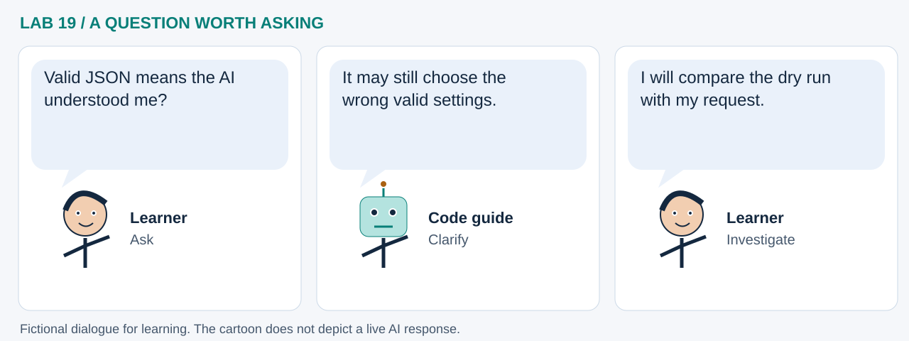

LAB 19 · 32-SECOND VISUAL WALKTHROUGH
A chat request becomes a plan
Can we inspect the map before applying AI's proposal?
Silent, captioned storyboard. Use the player to pause, seek or change playback speed. On a small screen, use fullscreen or read the transcript below. The diagrams explain the method; they are not recordings of a live model run.
Download MP4 · Captions · Open infographic at full size

What runs here?
Ollama proposes four settings. Python checks them and computes selections; GeoLibre renders only after human approval.
Optional local language-model inference; an authored fixture is used unless live mode is selected.
Transcript and code landmarks
- 00–08s · Ask
Request a small JSON plan from an explicitly selected local model.
await propose_map(prompt) - 08–16s · Check
Reject extra fields, imaginary layers and invalid values.
validate_plan(proposal['plan']) - 16–24s · Preview
Compute selection IDs without changing an existing map.
preview_plan(plan) - 24–32s · Approve
Apply only after comparing the proposal with the intended request.
APPROVE_MAP = True
The common misconception

Read the cartoon dialogue
- Valid JSON means the AI understood me?
- It may still choose the wrong valid settings.
- I will compare the dry run with my request.
Try explaining it
Who calculates the selected-cell count: the model or Python?
Check your reasoning
Python calculates it from the actual fixture. The model proposes parameters; the human checks their meaning.
Original educational illustrations and captions authored for this repository. See the notebook for data and software citations.